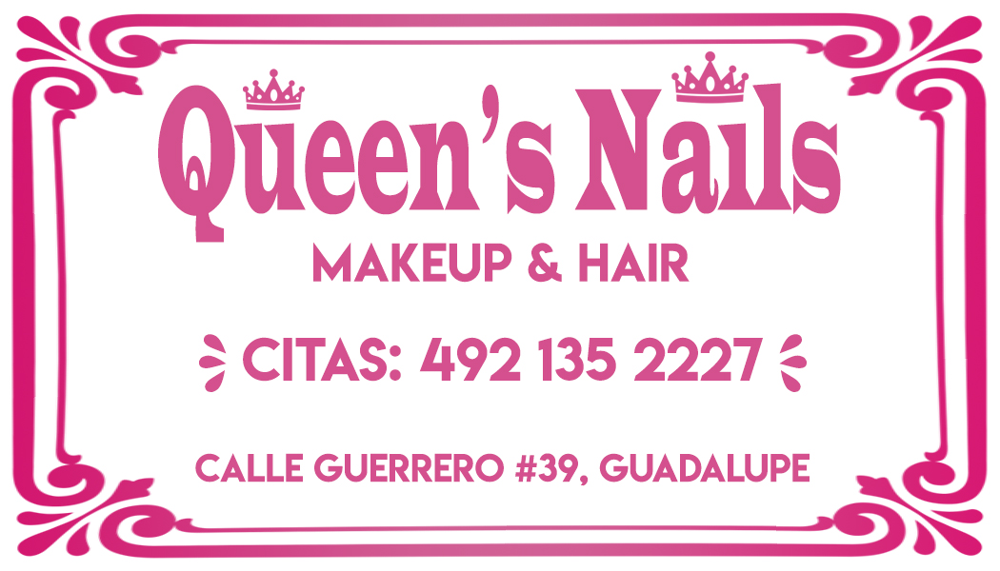

Portafolio
Todos mis trabajos
Queen's Nails
Fue el primer trabajo en el que participe, mi madre inicio su negocio de uñas de acrilico y lo que necesitaba era llamar la atencion de la gente entre los demas locales cercanos es por tal que diseñe el logotipo mas destacable.
Clase de programacion en cecytez
A pedido de los profesores del cecytez ,realice un isotipo para representar su clase en su unidad academica.